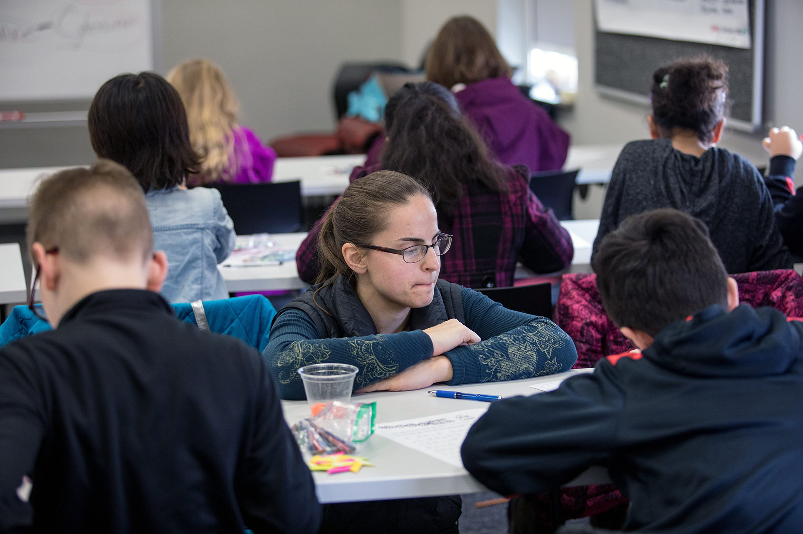

ELED 345 · 3 hrs
Foundations of elementary practice
Planning and assessment for diverse P–5 rooms. Field hours required.
Option B · built for the 40% of ELED visits that happen on a phone
Skip to contentBowling Green · Kentucky certificate
Elementary Education B.S. (Ref. 527). Kindergarten through fifth grade. 200+ hours in real classrooms before you student-teach.
Text STE · (270) 721-8539 I’m not ready — show me cost SMS only. This number cannot take calls.Start with where you live
Tuition and the next degree depend on it. Tap once.
Eligible Hilltoppers stack Pell, CAP, KHEAA Teacher Scholarship, and KEES until that number is $0 — sometimes with money left for housing. File FAFSA with school code 002002.
Text: can I stack aid?If you are coming as an undergraduate, text us your state before you compare WKU to a campus closer to home. If you already hold a teaching license in IL, IN, MO, OH, TN, VA, or WV, you want the graduate $350/hour rate — not this bachelor’s page.
Text from my stateFull-time non-resident undergraduate tuition is $13,500 per semester. The Tuition Incentive Program is $7,068. We cannot assign your rate in a webpage. Ten seconds of texting can.
Text my city + ask the rateOne page, four visitors
Transfers and teachers already land here from KCTCS and district networks. Don’t follow the freshman script if that’s not you.
You’ll take EDU 250, then literacy and methods, then a 16-week student-teaching semester (ELED 490, 10 credits). Teacher Education admission needs a 2.75 GPA or 3.0 on the last 30 hours, plus Praxis CASE or a qualifying ACT.
Open the applicationColonnade can transfer. Student teaching does not. Restricted methods still require OPES admission. Text the name of your current college.
Text my current schoolTeacher Education M.A.T. (Ref. 0495) is the initial P–5 route for career changers. Option 6 lets you teach on salary while you finish. That pathway grew from 9 to 91 students.
Text about the MATLicensed educators in Kentucky and seven border states pay $350 per graduate credit through 2029–30. A 30-hour MAE is $10,500. Coordinator: Dr. Janet Tassell, (270) 745-5306.
Text the $350 rateWhat it costs
Tap a layer. These are maximums, not a promise. Together they clear the $12,072 resident tuition line.
WKU KY resident tuition · $12,072 / year
This stack = $20,195. Tuition covered, with $8,123 toward other costs if you qualify for all four.
Tap any bar for the rule that attaches to it. TEACH ($4,000) and WKU merit can stack on top — they carry service or GPA rules.
Before senior year

Start observing while you finish Colonnade and MATH 205/206/308.
LTCY 320/420, then ELED 365 science, 405 math, 406 social studies — with children in the room.
ELED 490 is a full-time 70-day internship. Apply in Watermark a year ahead.
Swipe the work
ELED 345 · 3 hrs
Planning and assessment for diverse P–5 rooms. Field hours required.
ELED 365 · 3 hrs
Inquiry science for grades P–5. This is the science methods course.
ELED 405 · 3 hrs
Number, geometry, and data — taught the way children learn it.
ELED 490 · 10 hrs
One semester. One classroom. Co-teaching with a mentor.
9.4% projected growth
Your advisor, on this phone
No form. No hold music. (270) 721-8539 cannot receive voice calls.
I’m Meredith. Tell me where you go to school and whether you’re thinking P–5. I’ll map the next step.